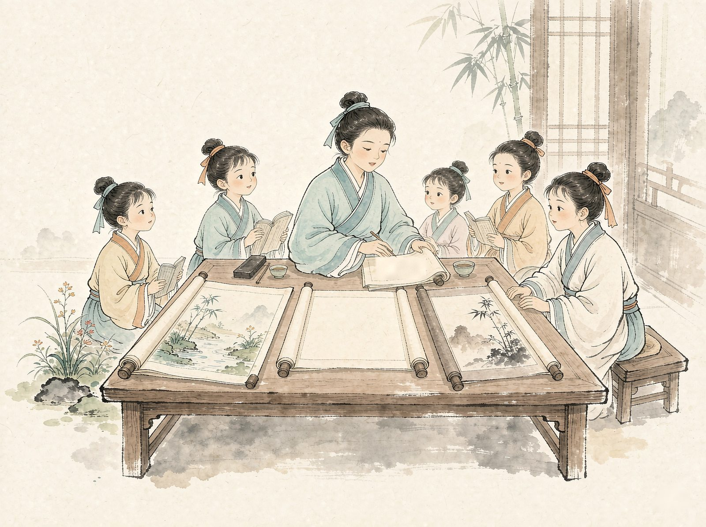
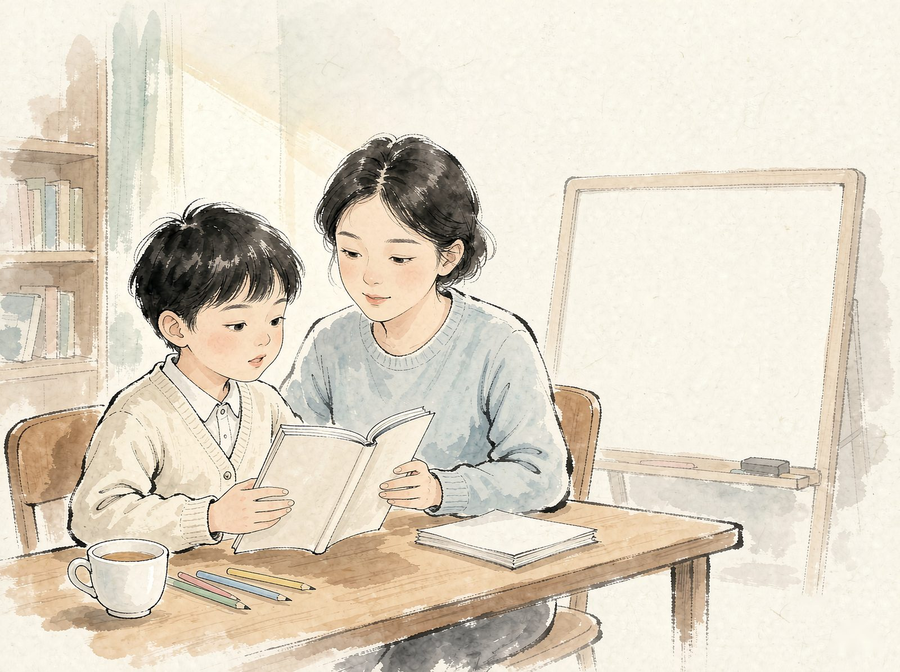

《诗经》分风、雅、颂三类。
国风，是各地民间百姓传唱的歌谣；
雅，是朝堂宴会、君臣劝诫的乐歌；
颂，是宗庙祭祀、怀念先祖的庄重乐章。
诗教的本意，是让人心柔和敦厚，懂得共情、知分寸。

国风、大雅、小雅、颂，合称为四诗。
读诗，重在讽咏：沉下心，伴着舒缓的声韵反复吟唱体会。
不是为了背下来应付考核，而是在吟咏之间，学会共情，养出柔和宽厚的心地。

落到心上理解
承接上一课存疑：《周书》多是上位者训诫，如何转化为普通人修身功夫。
诗教，恰好补上这一层。
《尚书》是直接告诉你何为善、何为戒；《诗经》是先唤醒共情。国风，看见普通人的悲欢，体恤众生之苦乐；雅，学习相处、言语往来的分寸，委婉劝善，不伤人尊严；颂，懂得溯源知本，感念来路，常怀敬慎。
放到自心：我们的念头情绪，也有三类。国风，是自然流露的情绪感受，不加掩饰；雅，是对情绪做调伏，委婉自持；颂，是沉静自省，回归本心本源。
吟咏诗章，是借外缘感发，练一颗敦厚柔软的心；欣赏情志而不沉溺情绪、不执着文辞，即是无住。
另有一问：诗教温柔，会不会缺少刚毅持守的力量。
讽咏的功夫，刚好平衡这一点。
单纯讲道理，容易落在头脑认知，听过就散；讽咏是音声入气，反复熏习。国风的共情、大雅的持正、小雅的讽谏、颂的诚敬，在一呼一吸、一抑一扬之间，持续打磨心念。
温柔不是软弱。在讽咏的沉静里，我们体察人情，同时守住分寸；感而不泛滥，悲而不消沉，乐而不放逸。
吟咏只是外缘，借音声调伏情绪，回归敦厚本心；吟咏而不耽于声韵文辞，即是无住。
只重文学审美，视诗经为诗文选集，舍弃诗教；读诗只求背诵，重记忆而无体会
风、雅、颂承载温柔敦厚的教化；讽咏重在涵咏内化，情志与义理相融
一、勘俗见。不必把诗经读成枯燥的道德课本，它尊重人的真实情绪，再引导情志归于平和。不要把讽咏当成背诵任务，重点是孩子在慢的吟咏里感受情绪、懂得体谅他人。
二、现代对照。如同情绪教养，国风接纳真实感受，雅学习得体表达，颂用来静心自省、常怀感恩。类似正念诵读，用舒缓的声音节奏，平复浮躁，让道理慢慢走进心里。
三、承接常变主线。敦厚诚敬的本心恒常不变（常）；歌谣体裁、上古礼乐场景，是当时教化的载体（可变之相）。敦厚本心恒常不变（常）；讽咏的曲调、诵读方式，属于可调整的方便（可变之相）。
四、承接教与学二分。师长讲清风、雅、颂的场景，区分文辞美感与教化内核，属于施教一侧；诵读吟咏，体察自身情绪，是自主修习。师长示范讽咏的节奏，引导体会诗意，属于施教一侧；自主吟咏、反观自心，是修习功夫。
承接选择力练习：吟咏养和，情而不流，婉而有节。
字义与句读
国风：各诸侯国的乡土歌谣；雅：分大小雅，朝廷朝会宴乐之诗；颂：宗庙祭祀、报功追远的乐歌。
上句释义：《诗经》篇目，分为国风、大雅小雅、颂三体，以乐诗承载温柔敦厚之教，感发善性，涵养人情。
四诗：国风、大雅、小雅、颂；讽：隐诵深思，沉味其意；咏：引声长歌，以声养气。
下句释义：风、大雅、小雅、颂，号为四诗；修习之法，当以讽咏涵咏，借音声熏习，化诗意入于心性。
二命题考辨
（1）诗教的定位，承接《尚书》
《尚书》是刚性的法度训诫，《诗经》是柔性的浸润教化。
风，采自民间，圣王藉此知民间疾苦、风俗好恶，不是居高临下评判百姓，而是倾听民情；
雅，朝堂之间，有赞美，也有委婉的批评，讽谏不直言刺伤，保留体面；
颂，不是夸耀功德，是饮水思源，不忘先祖开创、养育的恩德，以诚敬收摄浮躁之心。
风、雅、颂三体搭配，让教化不再是生硬命令，而是以共情入心。这也是儒家“诗可以兴，可以观，可以群，可以怨”的根基。
（2）对照当下现代语境
现代人最缺的正是这种“温柔的分寸”：表达情绪要么压抑不说，要么激烈宣泄。
诗教的训练，就是国风一般接纳感受，雅一般委婉得体地表达，颂一般定期沉静、自省归本。既有真情，又不放任情绪泛滥；能够共情他人，也懂得自持。
现代人杂念纷飞，读经典常常看过即忘，道理和生活脱节。讽咏的价值，就是建立身心的链接：声音、呼吸、念头同步，反复熏习。不是靠强力说服自己向善，而是在舒缓的节奏里，慢慢把宽厚、共情、知止的品质养出来。温柔之中自有定力，便是刚柔相济。
（3）般若范式互参
诗篇意象，是标月之指。
诗篇吟咏，是标月之指。
联动三才五蕴太极空杯模型：敦厚自性是空杯之中本自具足的本体；风、雅、颂的诗篇、比兴意象，是用来唤醒这份本心的外缘。文采意象虽美，不可流连攀缘、沉湎情志。敦厚自性是空杯本具之体；四诗、讽咏音声，是外缘熏修的方便。好听的声韵、优美诗句，都只是舟筏，不可耽乐其中。
呼应“本乎数”：三体，对应情、序、敬三层功夫。四诗为体，讽咏一敛一舒，阴阳成对。
延伸义理：
《金刚经》：应无所住而生其心，诗兴即是生其心，敦厚而不沉溺情志，便是无住。应无所住而生其心，讽咏之时，因声起兴，而不住于声、不住于诗境。
《道德经》：含德之厚，比于赤子，正是诗教敦厚的底色。大音希声，讽咏是有声之音，向无声之本心回归。
《坛经》：道由心悟，诗的感发，就是借外缘启发自心本有的善性。道由心悟，讽咏只是外缘，悟入敦厚自性，方是诗教归宿。
（4）四诗与讽咏，是诗教的实修法门
上一句是“知道有什么”，这一句是“怎么用功”。
分而言之：国风多民风哀乐，讽咏以共情；小雅多讽喻伤时，讽咏以自省；大雅多朝廷正大之音，讽咏以立持守；颂多追远报本，讽咏以养诚敬。
讽，偏于止、向内收；咏，偏于发、向外舒。一收一放，和前面阴阳太和框架完全契合。不同于《尚书》直陈训诫，诗走情志、气息的路径，是潜移默化。
三跨典互参（老庄、般若对照）
· 《道德经》：乐与饵，过客止，勘破声乐文辞的诱惑，而取其和心之用。乐与饵，过客止，警示不要沉溺音声之乐，而取讽咏和心之用。
· 《庄子》《齐物》，哀乐不入于心，正是风雅颂的上层境界：感而不染。
· 串联前文：六经次第，《书》立政教，《诗》启情志，刚柔互济。六经次第，《诗》立情志之教，讽咏为下手功夫。
· 《庄子》：吾丧我，可于讽咏的浑然气韵之中，体会物我相融的诗境。
四和前面课程的张力
次第链条：……→ 号周书，七十篇 → 有国风，有雅颂 → 号四诗，当讽咏
呼应“人不学，不知义”：知情志涵养、温柔中和之义；知音声熏修、情志中和之义；
呼应“玉不琢，不成器”：借诗乐兴发，打磨情志，不纵情、不压抑；借讽咏舒敛之气，打磨情知心念；
呼应“教之道，贵以专”：专守敦厚本心，吟咏感发而不耽文辞。专守敦厚，吟咏而不耽声韵文辞。
五1. 国风多有男女情爱之诗，如何把握解读边界，既不曲解，又不流于俗情？
2. 雅颂依托上古礼乐祭祀，礼乐失传之后，今人如何体会其中诚敬，不流于形式？
3. 诗教的温柔，会不会失之于软，缺少《尚书》那种刚毅持守的力量？
4. 讽咏和颂钵、音声法门是否同源？如何区分诗教讽咏与禅修音声的边界？
5. 性情偏于内向沉静之人，讽咏容易昏沉，该如何调整用功方式？
6. 四诗之中，小雅多哀怨之音，长期讽咏会不会引生沉郁感伤？